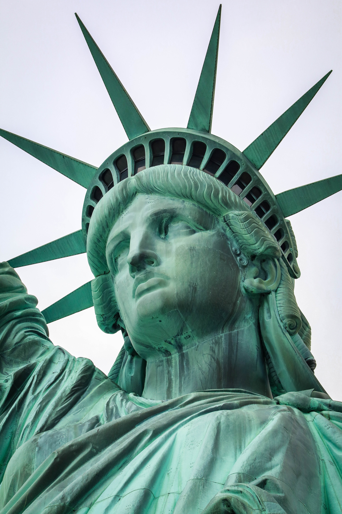
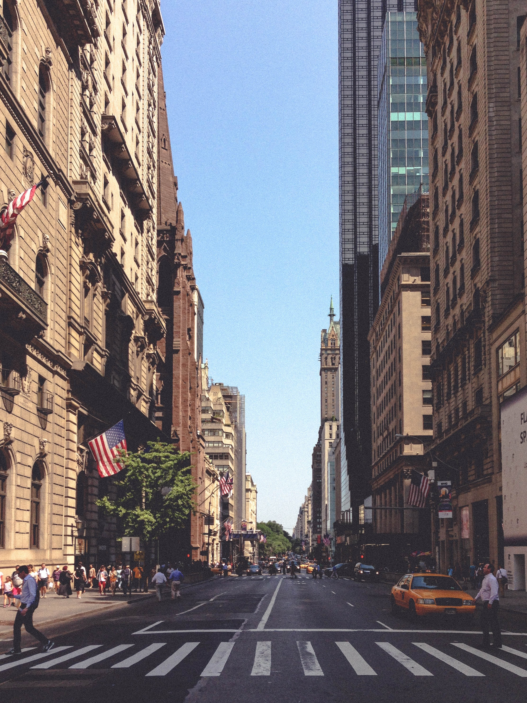

Statua Wolności to posąg na wyspie Liberty Island u ujścia rzeki Hudson do Oceanu Atlantyckiego w regionie metropolitalnym Nowego Jorku, nieoficjalny symbol wolności, Nowego Jorku i Stanów Zjednoczonych. Ten monumentalny, neoklasycystyczny obiekt został wzniesiony w latach 1884–1886 według projektu Frédérica Auguste'a Bartholdiego, Gustave'a Eiffela i Richarda Morrisa Hunta . Jest to dar narodu francuskiego dla narodu amerykańskiego, upamiętniający przymierze obu narodów w czasie wojny o niepodległość Stanów Zjednoczonych. W 1924 został uznany za narodowy pomnik Stanów Zjednoczonych, a w 1984 wpisany na listę światowego dziedzictwa UNESCO. Figuruje również w rejestrze National Register of Historic Places.
Park Yellowstone to park narodowy w Stanach Zjednoczonych na terytorium stanów Wyoming, Montana i Idaho. Park narodowy Yellowstone jest najstarszym parkiem narodowym na świecie. Na jego terenie znajdują się słynne gejzery, gorące źródła, wulkany błotne, fumarole i wodospady. Park usytuowany jest na rozległym wulkanicznym płaskowyżu, pod którym na głębokości 7–17 km znajduje się komora magmowa . Za pomocą diagnostyki magnetotellurycznej ustalono, że 300 km pod ziemią również znajdują się silnie stopione skały. W 1978 Park Yellowstone został wpisany na listę światowego dziedzictwa kultury i przyrody UNESCO. Ustanowiono też rezerwat biosfery.